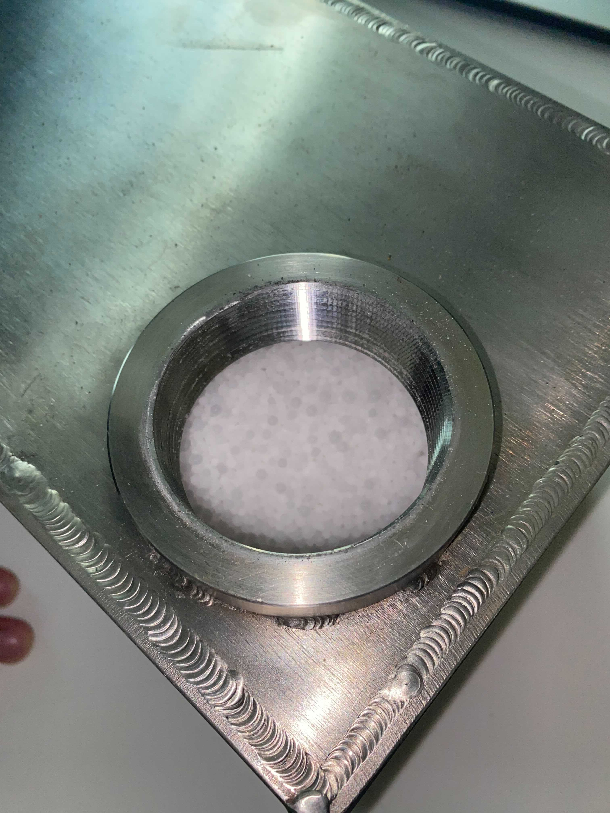

During this week we were introduced to systems thinking by Rea Lavi and we learnt about the SAFO framework!
We learnt these concepts:
During that week we also investigated two metal boxes containing salts

The boxes were made in the MIT Central Machine shop and theirsize was 6x7x11 inches with approximately 85% of the box filled with salt.
We also suggested to possibly use thermal transfer fluids around the box and cooking surface to transfer heat across the system.
Come back next week to see how our class project has progressed!